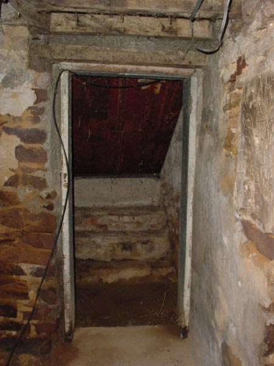

|  |
|
I call these the coal doors, but I do not know if they were. Being Pennsylvania, coal delivery is still available and was quite common. These are a typical set of the steel-angle doors that lead to the side yard. In defiance of the Pennsylvania winter, there is no insulation. When snow piles on these doors, they chill the room wonderfully. There is a set of hand-made stone steps leading up and down. Note how the decor is heavily accented with cobwebs and an errant cable-television coax cable. Due to the age of the stonework, some of the plaster has crumbled to dust, revealing the exposed stones. [ Look left to the corner. | Look at the exposed stone in the wall | Back to the by the arch | Is that an old fireplace on the right? ] |